Coleção de Criações
Projetos e experimentos com um lado mais pessoal ou criativo, que não se encaixam no formato mais técnico do Portfólio de Projetos.
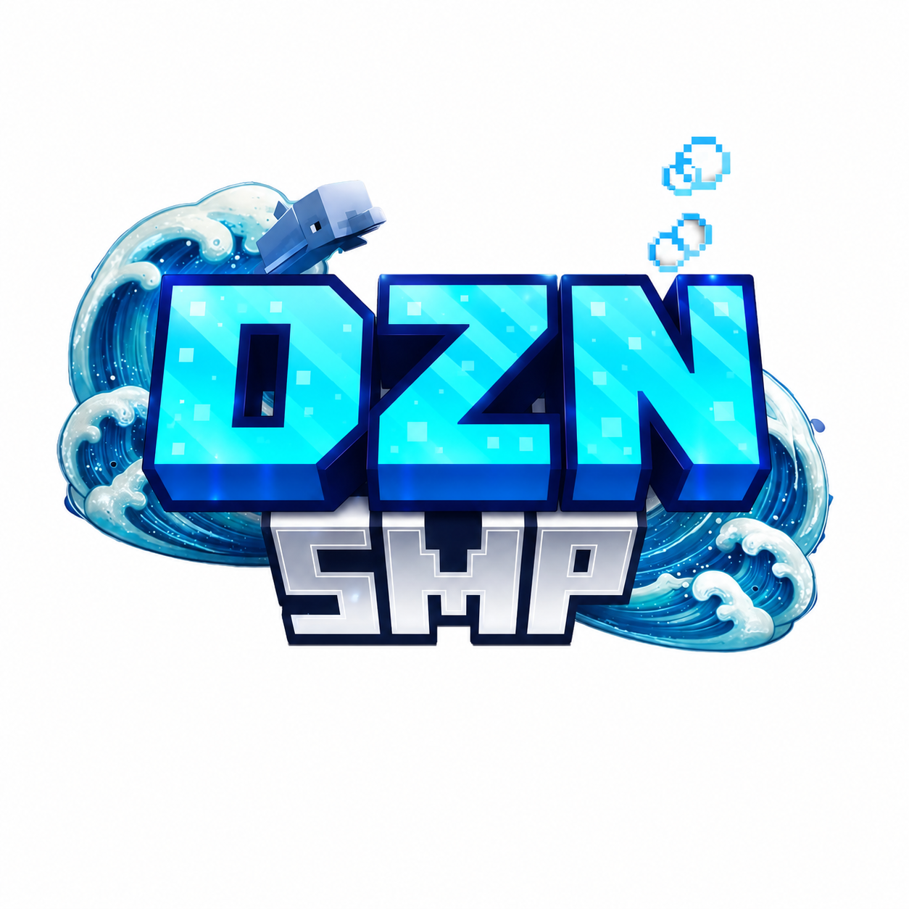
Rede de servidores de Minecraft em produção (dznsmp.net), com
jogadores reais: um Lobby e uma SMP (sobrevivência), rodando sobre DivineMC
(fork do Paper/Bukkit). A lógica de jogo — economia,
loja, clãs, ranking, casas/teleporte, menus — é feita por cerca de 25 plugins
Java customizados, compilados manualmente via javac/classpath
(sem Maven ou Gradle). A autenticação é cross-server: o jogador loga uma vez
no Lobby (via AuthMe) e transita pros outros servidores através de uma tabela
de sessões num banco H2 compartilhado, acessado por pool de conexões
HikariCP. Tem também uma stack de anti-cheat própria (GrimAC, AntiFreecam,
CheckHacks, ESPShield) e se integra com o bot de Discord ao lado pra vínculo
de conta, cargos e economia.
Uso de IA: desenvolvido com o Claude Code como principal ferramenta de escrita de plugins/scripts — toda mudança é testada localmente antes, e só eu decido quando aplicar em produção; a IA nunca reinicia o servidor ou mexe no banco de dados sozinha.
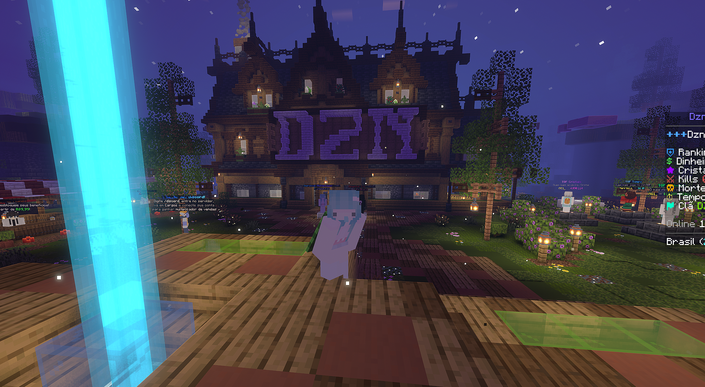
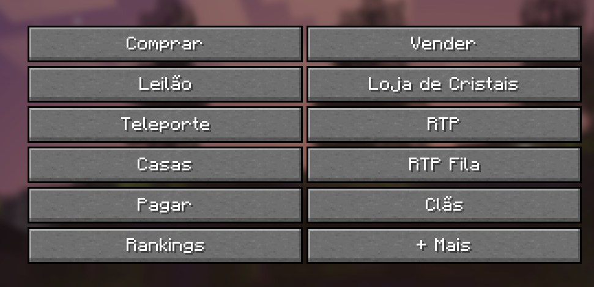
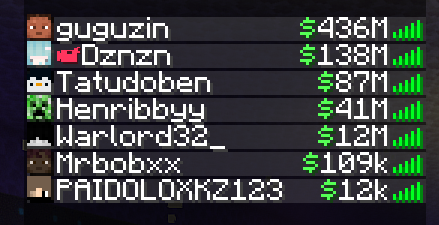
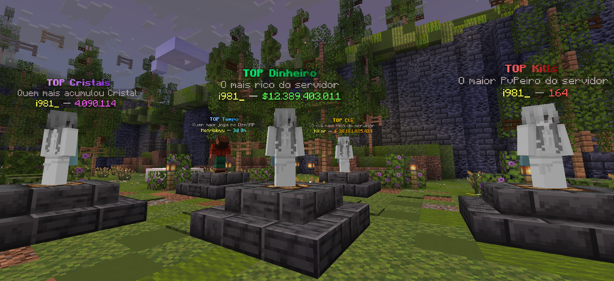
Bot de Discord separado do servidor de jogo, mas integrado a ele: vincula conta do Discord ao nick do Minecraft, dá cargo automático por plano/ assinatura, sistema de XP e economia, boas-vindas customizadas, rastreio de convites, automod, tickets de suporte/denúncia e candidaturas de staff (Helper/Dev) com painéis próprios. Escrito em Node.js com discord.js 14 (ES modules); guarda dados leves em JSON local (convites, XP, vínculos) e consulta MySQL para o que é compartilhado com o servidor de jogo.
Uso de IA: desenvolvido com o Claude Code — cada funcionalidade nova (comando, painel, automação) é implementada e testada antes de ir pro bot em produção.
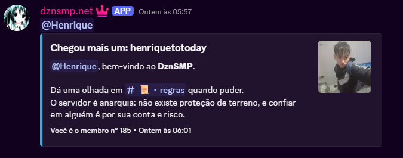
GuildMemberAdd, com embed customizado que já busca o canal
de regras e o número do membro direto da API do Discord.
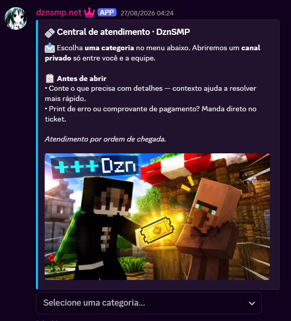
StringSelectMenu do discord.js) — ao
escolher uma categoria, o bot cria um canal privado novo via API do
Discord, com permissão só pra quem abriu o ticket e a equipe.
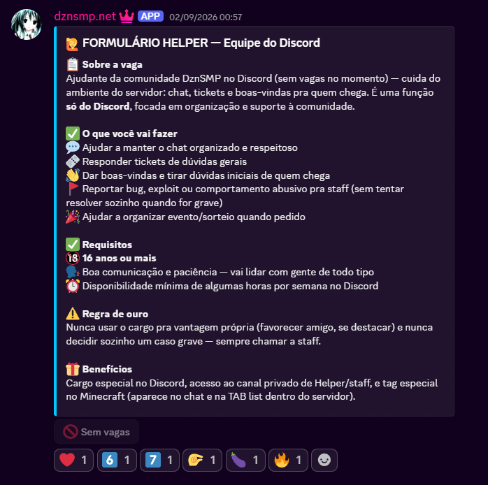
Sistema de detecção de objetos em tempo real, escrito em C++17: captura de tela em baixa latência via DXGI/DirectX 11, inferência com um modelo YOLO26s rodando via ONNX Runtime acelerado por GPU (DirectML, compatível com qualquer placa DirectX 11), e um driver próprio em modo kernel pra input de mouse — contorna a camada Win32 diretamente, carregado por um mapper de driver não assinado baseado no kdmapper. O launcher, em C#, cuida de autenticação, validação e atualização automática. Foi um projeto exploratório pra mexer com fundamentos que não aparecem no dia a dia de desenvolvimento web: inferência de visão computacional em tempo real, programação em modo kernel no Windows, e otimização de latência ponta a ponta.
Uso de IA: desenvolvido com o Claude Code como principal ferramenta de escrita de código — da engine de inferência ao driver, eu direcionei a arquitetura e revisei o resultado.
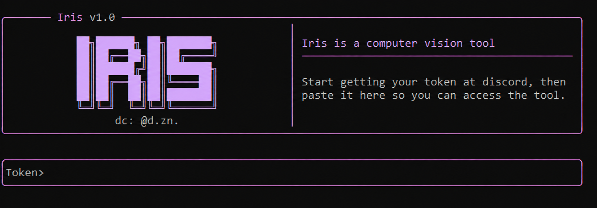
Experimento de behavioral cloning: um script em Python
(mss + pynput) grava, a 30fps, frames de tela e a
posição do mouse/teclas pressionadas durante partidas humanas de League of
Legends. Esses dados treinam uma EfficientNet-B0
(pré-treinada em ImageNet) com duas cabeças de saída — uma prevendo a posição
do mouse por regressão (MSE) e outra prevendo quais teclas estão pressionadas
por classificação multi-label (BCE) — usando Adam, CosineAnnealingLR e early
stopping. Depois de treinado, o modelo é exportado de PyTorch pra
ONNX Runtime pra rodar inferência em tempo real.
Uso de IA: desenvolvido com o Claude Code como principal ferramenta de escrita de código — eu direcionei o pipeline (gravação, treino, exportação) e revisei o resultado.
Servidor de inferência 100% local: um modelo open-weight de 27B parâmetros
(Qwen 3.6, formato GGUF) rodando via llama.cpp
(llama-server) numa RTX 5060 Ti de 16GB, alimentando o
opencode — um agente de código no estilo Claude Code, mas
apontado pro modelo local em vez de uma API na nuvem. A parte de engenharia
foi balancear tamanho do modelo × janela de contexto × VRAM disponível:
comparei várias quantizações (de Q3_K_M a i1-IQ2_M), medindo o contexto
máximo estável em cada uma, e usei compressão do KV-cache
(--cache-type-k/v q4_0) + Flash Attention pra esticar o contexto
sem estourar a memória. Configuração final: quant i1-IQ3_XS, 80K de contexto,
~14.7GB de VRAM em uso.
Uso de IA: configurado por mim (parâmetros do llama.cpp, comparação de quantizações), usando IA de chat pontualmente pra tirar dúvidas sobre trade-offs de memória/contexto.
Prints de dashboards que estou usando como referência visual (paleta escura, roxo/violeta, cards de métricas, heatmap de atividade) para desenhar a interface do devtracker antes de implementar.
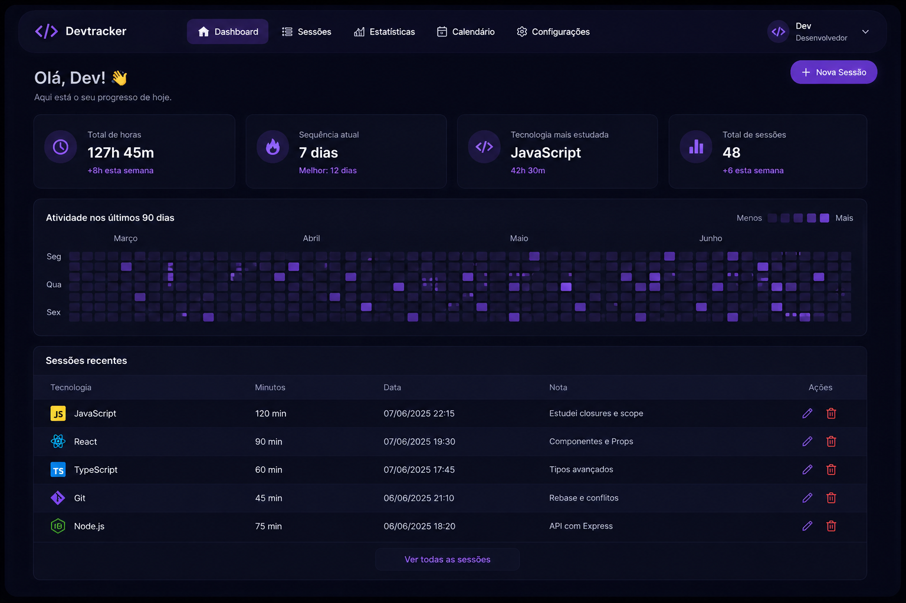
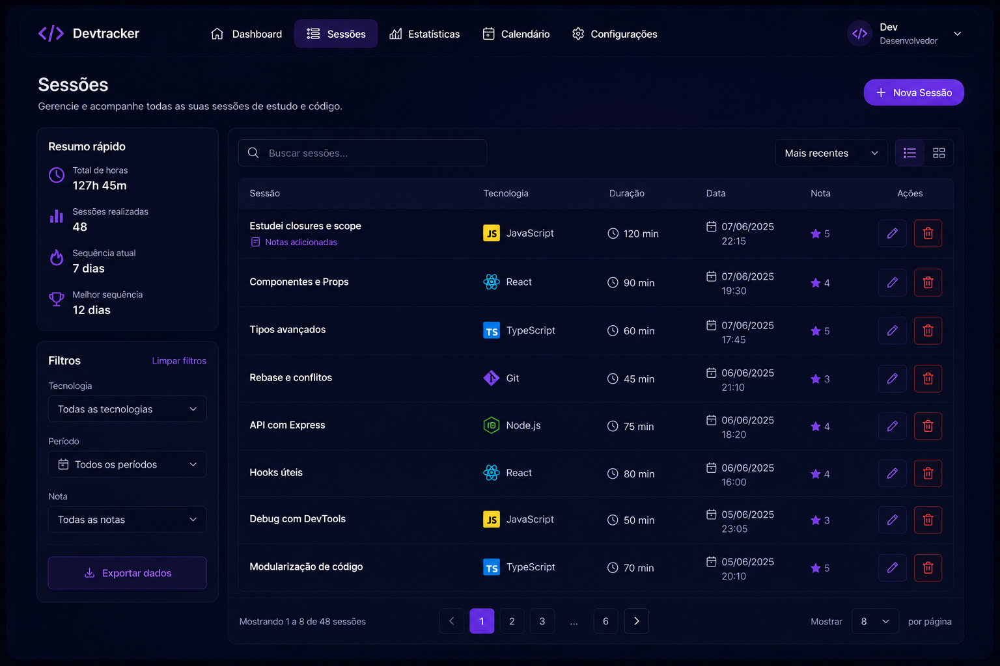